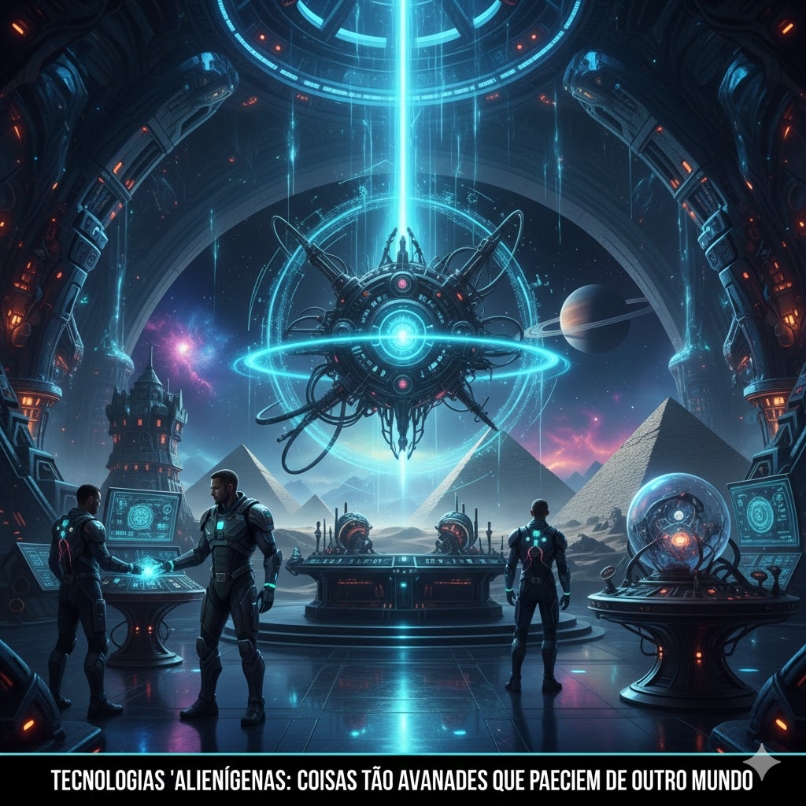

👽 Tecnologias "Alienígenas": Gênio Humano ou Visita Espacial?
Existem monumentos e objetos tão incríveis que muita gente duvida que foram feitos por humanos. Vamos aos três maiores "mistérios" que desafiam nossa lógica:
O Mistério: Como mover blocos de 80 toneladas com precisão milimétrica e alinhamento estelar?
A Explicação: Engenhosidade extrema! Usavam rampas complexas e trenós molhados para reduzir o atrito. Foi suor e matemática!
O Mistério: Desenhos gigantes no deserto que só podem ser vistos do céu. Como desenharam sem aviões?
A Explicação: Geometria pura. Usando estacas e cordas, eles ampliavam desenhos pequenos. É possível fazer a pé com planejamento!
O Mistério: Um computador de bronze de 2 mil anos que previa eclipses com engrenagens ultra complexas.
A Explicação: Tecnologia perdida. Os gregos eram mestres da mecânica, mas muito desse conhecimento foi destruído pelo tempo.

💡 Veredito: Alienígenas ou Humanos?
Nossos ancestrais eram gênios! Eles não tinham Wi-Fi, mas dominavam a física e a observação de um jeito que ainda nos deixa de queixo caído.